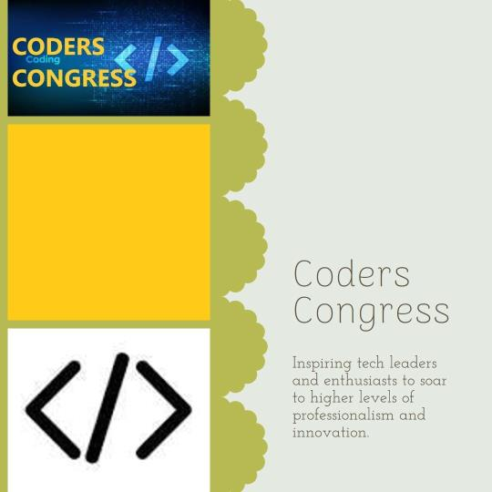

Building A Personal Portfolio Website
Building A Personal Portfolio Website
A personal portfolio website is an essential tool for any professional who
wants to showcase his or her work, skills and experience across to potential
clients, employers and interested parties in an organised and controlled
fashion that is responsive and SEO friendly. It enables the individual to
highlight his or her brand identity, craft their resumés and CVs and easily
share their unique portfolios to various social media platforms. This would
ultimately help them to advance their career and also their personal brand.
People who might want to promote an online campaign with a personal
portfolio website include graphic designers, artists, freelancers, web
designers, developers etc. to showcase their portfolio of work to potential
clients, customers, employers and all other interested parties. The
portfolio website may also display personal profile information as well as
branded and copyrighted products and images.
In this coding project we shall learn how to quickly build a personal
portfolio website using Node.JS, Express.JS, Bootstrap, JavaScript, CSS3 and
HTML5.
Note: It is assumed that the reader has basic knowledge of Web technologies
like HTML, CSS and JavaScript. If not, please get some introductory
tutorials on them and then come back to check out the continuation of this
article.
ln this coding assignment we shall be using powershell as a command line
shell to execute our tasks. We shall also use notepad++ as a code editor to
keep things simple.
Now let's begin by launching MS Powershell (Win Key+X and then press i).
Coding Project
ln this coding project we shall be using powershell as a command line shell
to execute our tasks. We shall also use notepad++ as a code editor to keep
things simple.
Let's create a folder for our coding project with name say myportfolio.
C:\ mkdir myportfolio.
Then let's change to this newly created folder by typing the following at
the command prompt.
C:\ cd myportfolio
, so that we now have
C:\ myportfolio
at the command prompt.
We wish to have all or some of the following attributes on our portfolio
webpage:
Academic Background
Professional and personal experience
Education
Skills
Platforms and media that you use, e.g., Facebook, Instagram, LinkedIn,
Twitter, YouTube etc.
Awards and recognitions
Landing, Home or Index page
About us
Blog Post- : Briefly describes what you are particularly good or skilful at
doing. Demonstrate your leadership and people skill potentials as well as air
your opinions and views on trending and topical issues related to your field
of expertise or on general issues.
Catalog
Contact Us
FAQ
Features
Gallery
Payments
Pricing
Product Page
Registration
Service Page
Shopping Cart
Slider
Testimonials.
To get things started on this project we must first download and install
both node.js and our preferred package manager, npm, yarn, pnpm etc.
Express.js
Express.js Express is a fast, unopinionated, minimalist server-side Web and
mobile application framework for Node.js.
Express.js, or simply Express, is a back end web application framework for
building RESTful APIs with Node.js. It's written in Javascript and designed
for building web applications and APIs.
It has been called the de facto standard server framework for Node.js. Node
often serves a server-side runtime environment for JavaScript applications
and is built on Google Chrome’s V8 JavaScript engine.
Express.js is a node.js based server- side framework for designing web and
mobile applications as well as APIs. Express.js makes it easy to design
single page, multi-page as well as hybrid web and mobile applications and
supports the MVC architecture. It comes with two template engines Jade and
EJS which makes it easy to dynamically inject data values into an HTML file
at runtime.
To use Express.js we must first install it with the node package manager
(npm) as given in the following command:
C:\myportfolio>npm install -s express
To create a project without going through an interactive process execute the
following at the command interface in powershell:
C:\myportfolio> npm init -y
Express application generator
Use the application generator tool, express-generator, to quickly create an application skeleton.
You can run the application generator with the npx command (available in Node.js 8.2.0).
$ npx express-generator
For earlier Node versions, install the application generator as a global npm package and then launch it:
$ npm install -g express-generator
$ express
View the command options with the -h parameter:
$ express -h
For example, the following creates an Express app named myportfolio. The app will be created in a folder named myportfolio in the current working directory and the view engine will be set to Jade:
$ express --view=jade myportfolio
View engine support: (ejs|hbs|hjs|jade|pug|twig|vash -: defaults to jade)
Then install dependencies:
$ cd myportfolio
$ npm install
On MacOS or Linux, run the app with this command:
$ DEBUG=myportfolio:* npm start
On Windows Command Prompt, use this command:
> set DEBUG=myportfolio:* & npm start
On Windows PowerShell, use this command:
PS> $env:DEBUG='myportfolio:*'; npm start
Then load http://localhost:3000/ in your browser to access the app.
We are going to use Bootstrap and basic HTML for the view, and the
Express.js framework as a Web server and to handle routes/pages.
Bootstrap
Bootstrap is a front-end framework used to design websites and Web
applications. It employs HTML and CSS based design templates for buttons,
navigation, forms, typography, other elements and interface components and
also optional JavaScript extensions.
Bootstrap allows for responsive web design and this enables dynamic layout
adjustment of web page displayed depending on the the characteristics of the
device used, i.e., mobile, tablet or desktop. Bootstrap has adopted a
mobile-first-design philosophy, which basically emphasises responsive
design, by default.
In general Bootstrap offers a set of style sheets that provide basic style
definitions for all key HTML elements or components. These basic style
definitions provide an aesthetic and uniform technique for formatting text,
tables and form elements.
Bootstrap also contains other commonly used UI elements. These components
implemented as CSS classes, can be applied to certain HTML elements e.g., p,
h1 etc, on a Web page.
Bootstrap also has JavaScript components in the form of jQuery library
plugins. These JavaScript components provide UI elements such as alert
boxes, tooltips and carousels and features such as auto-complete function
for the input fields.
Furthermore, Bootstrap since version 4.0 supports SASS (Syntactically
Awesome Style Sheets) and Flexbox, which is a CSS3 Web layout model which
allows responsive elements within a container to automatically arrange themselves
according to different screen sizes and devices.
Follow us